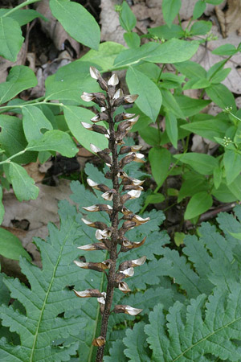

Previous || Next || Return to Mystery Plants || USC Herbarium
This Week's Mystery Plant | Dr. John B. Nelson Curator, USC Herbarium |
|
Here is a woodland herb that can be found in shaded forests, often along damp, mossy creek banks in rocky woods. In South Carolina, it is most commonly seen in the mountains and piedmont counties, but it also occurs, here and there, in the coastal plain. It is very widespread in North America, and was first named from plants seen in Canada. Its distribution includes all of the eastern states, south to northern Florida, and west to the Great Plains. The whole plant is about two feet tall, arising from a basal mound of leaves. The leaves are deeply divided, and the plants are thus sometimes mistaken for ferns. The leaves, while young, may be reddish, but they eventually turn a deep green. The plants are at least partially parasitic on their neighbors, forming attachments through their roots. Don’t look for flowers on it now, as this is a spring-bloomer, beginning its floral display in late March, continuing through April. The flowers are arranged on a cone-like spike at the top of the stem. The tubular corolla, which is about an inch long, is quite variable in color, and may be creamy yellow to wine-red. The flowers themselves form a tight whorl around the spike, and some people think it looks like a sort of tiny pine cone with blossoms. The flowers seem to be attractive to a number of different pollinators, including hummingbirds. The flowering stem elongates dramatically after flowering, and presents a long stalk with the drying capsules: it is these which you see on the plants now. Closely related European species were once thought--mistakenly--to cause sheep and cattle to become "lousy" after feeding upon the plants. The common name of our Mystery Plant continues this erroneous tradition. |
 Photo by Jerry Bright |